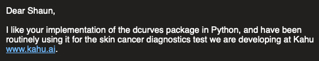
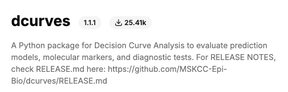

How I completely automated my Python Package Development Workflow
Whenever you start doing something, whatever it is, you will be extremely far from efficient at it. I think it’s probably a law of the universe. There are also fundamental concepts in machine learning called ‘loss functions’ and ‘gradient descent’ which are analogous to the same phenomenon in humans. The basic idea is that we know there’s a fundamental truth, or something to aim for. We take iterative steps towards the goal, and eventually either we end up at the goal, or we become extremely efficient at achieving it. There is the concept of optimizing towards a ‘local minima’ and getting stuck there, and also the fact that sometimes we learn things that are counterproductive in which case our progress more closely resembles ‘stochastic gradient descent’, but we won’t get into that for now.
Let’s take this blog as an example. The last 2 posts I wrote are steaming hot trash. I was basically just trying to churn out my thoughts and get into the groove of writing. I tried to articulate myself around 2 topics I was thinking about, and used lots of language I cringe at when I go reread. The style also seems overly formal and the pieces are not too captivating in my perspective. I feel like the tone in this post, however, is closer to what I’d like to maintain on this site. It’s personable, has a flow of consciousness feel to it, and relates disparate ideas in a haphazard way. As a person, I’d say that’s way more representative of who I am as opposed to being focused on a singular topic and rusty with the words I like to use.
Anyways, around 3-4 years ago, I was asked at work to build a Python package by my boss. Initially, not only did I know nothing about Python packaging and open source, I also knew embarrassingly little about Python. I was fresh out of my Master’s degree and very much green around my ears and everywhere else. I started following this dude named neuralnine on YouTube, and his python packaging video was the first thing I ever saw on the subject (YouTube Link). He used twine and some other tools in a rudimentary way to get something up on PyPI.org very quickly. It didn’t have any of the bells and whistles I use today, but it worked, which in hindsight is massive.
His workflow I probably used for a good while, maybe around 2 years or so, before I was introduced to more experienced people in the field who integrated CI/CD and Poetry, for example, and automating all of the testing. It was when I was using the old workflow that I had people sending me messages about how they’re using my package and like my implementation, and that they’d like this improvement or that bugfix. Case in point:

After several years of maintaining and improving the package I made, now I have a very fast, headache-free workflow that has allowed me to build something that can cater to a larger audience. I was shocked to learn this, but my package recently hit 25k downloads! Have a gander at pepy.tech:

You always see those shows on [insert your favorite media platform] where the main character goes through a period of hardship or training in order to gain some new power or ability. I feel like the hardships of making this package over the past few years have allowed me to refine my package-building and programming workflow to such a degree that things which would have taken me days or weeks to do previously now take seconds. This is the level of efficiency you can achieve in programming if you put your attention in the right places.
For anyone who’s read this far, you deserve this present. Here is the GitHub actions file I’ve generated after much trial and tribulation: GitHub Link.
This automates testing on different Python versions, pushing to test.pypi, pypi, and can easily include linting and generating a documentation site. I would have murdered to have had this a few years ago.
For all things local, please use Poetry, which is currently far superior to astral-uv. This is my hottest take currently. Poetry is tried and tested, and worked seamlessly, albeit much more slowly, for the entire packaging workflow. With uv I felt like I was passing the largest kidney stone known to man when I was trying to push packages to pypi/test.pypi.